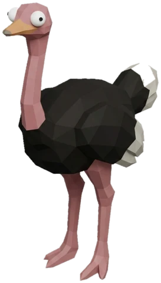
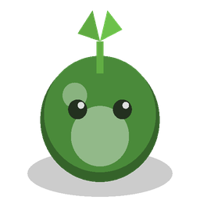
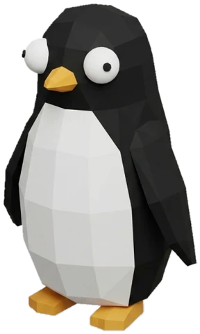

Chasse aux bêtes en coopération
Who Let the Zoo Out
Le zoo de Poulaillac s'est vidé pendant la fête du village. Une épuisette, une camionnette hors d'âge, et tout un bourg à remettre en ordre, seul ou jusqu'à quatre.








Studio de jeux indépendant, en France. Tout le zoo s'est échappé ici, dans Who Let the Zoo Out et dans Bloomstead.
Voir les jeuxChoisis un jeu pour voir ses images, ce qu'on y fait et tout ce qui a changé depuis la dernière version.
Chasse aux bêtes en coopération
Le zoo de Poulaillac s'est vidé pendant la fête du village. Une épuisette, une camionnette hors d'âge, et tout un bourg à remettre en ordre, seul ou jusqu'à quatre.
Casse-tête d'automatisation cosy
Le monde s'est éteint. Pose quelques machines, pour de bon, et laisse ton usine faire refleurir la terre case après case.
Twelve languages, the machine's language by default, money in dollars
8 changements Who Let the Zoo Out Build du 18 novembrePainted title screen, sticker menus, real models for the pound and the fair, soft boss gauge
3 changements Who Let the Zoo Out Build du 17 novembrePaid first jobs, real water and fishing, new menus, and a round of fixes
2 changements Who Let the Zoo Out Build du 16 novembreUne boutique dans chaque quartier, avec son propre outil. Mégaphone à la zone commerciale, bouées à la base de loisirs, poêle à frire à la campagne, buisson portatif et bombe soporifique au zoo.
15 changementsRamdam Games, c'est une seule personne, en France, qui fait des jeux le soir et le week-end. Des jeux qu'on lance avec des amis pour une partie et qu'on quitte trois heures plus tard.
Chaque jeu a sa page, ses images et son journal de développement. J'y note ce qui change d'une version à l'autre, des grosses nouveautés aux petites corrections.